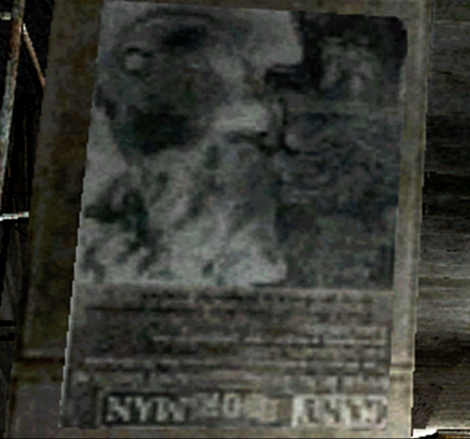
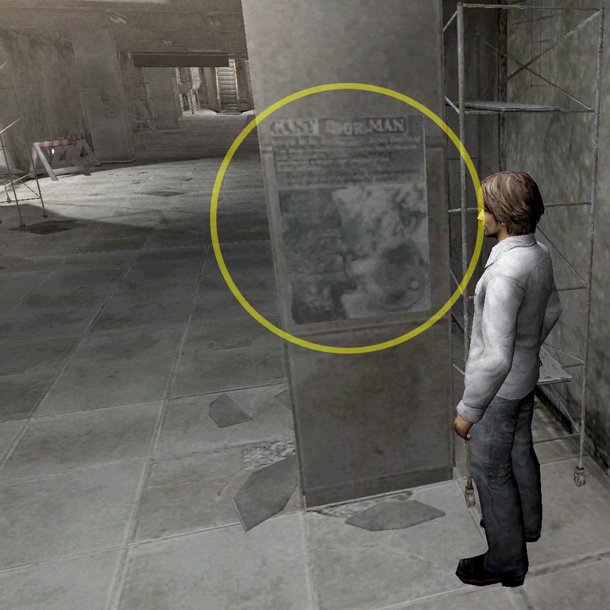
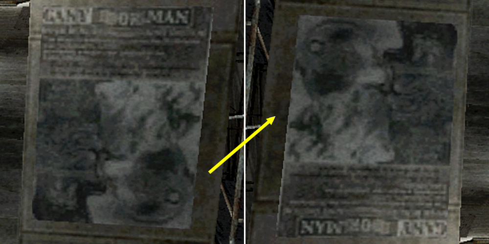
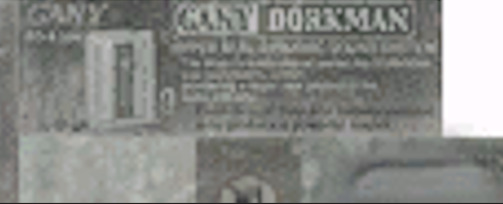
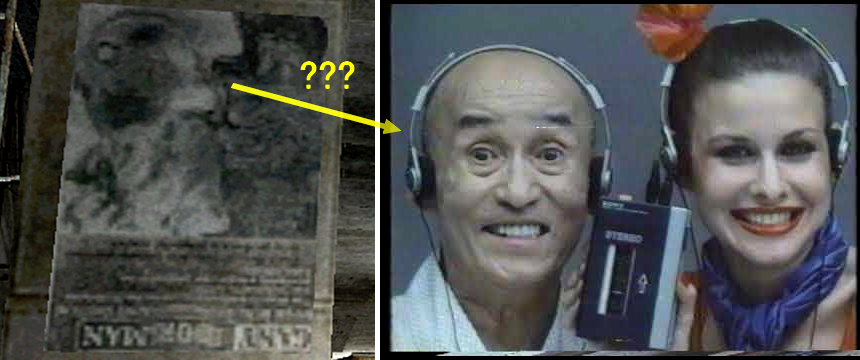
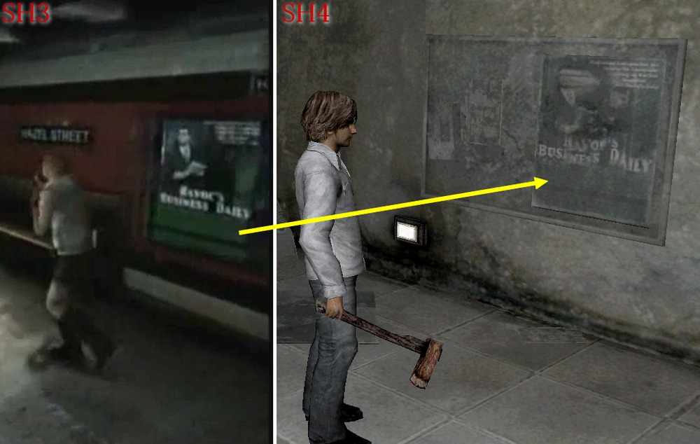

[SH4] Mysterious Poster at the Station: An Alien?!

The Mysterious Poster at South Ashfield Station
This is a mirror of the DeviantArt version linked above, provided as a backup and for easier access.


The poster from South Ashfield Station from the Subway World. Does it say "GANV OMAN" on it?
Turning it over shows the picture more clearly. What is this poster, exactly? An alien? Or a robot? He's being shot and screaming!

✅ Resolved
About this text that I couldn't read before: @hun10sta figured out from another texture that it says "Gany Dorkman," a parody of the Sony Walkman. Thanks, Hunter!

Quote:
"I am like 99% sure it is 'Gany Dorkman' and is supposed to be a parody of the Sony Walkman, because that looks like a tape player on the left."
✅ Probably Resolved?
So does that mean this poster might not be an alien, but a Walkman parody?
I dug through some old commercials and… could it be this? lol

It's from the first Walkman (TPS-L2) commercial.
The man on the left is a Japanese actor called Chuzaburo Wakamiya (若宮忠三郎), he actually passed away quite a long time ago.
✅ Extra
Some of the posters at this station were the same as the ones at SH3. Since the images from SH3 were clearer, they could be identified using those images. Like this one.

The image quality's improved, but the poster's all blurry. It's intentionally like that...
Next time I have the chance, I'd like to check and analyze all the posters at the station, but...